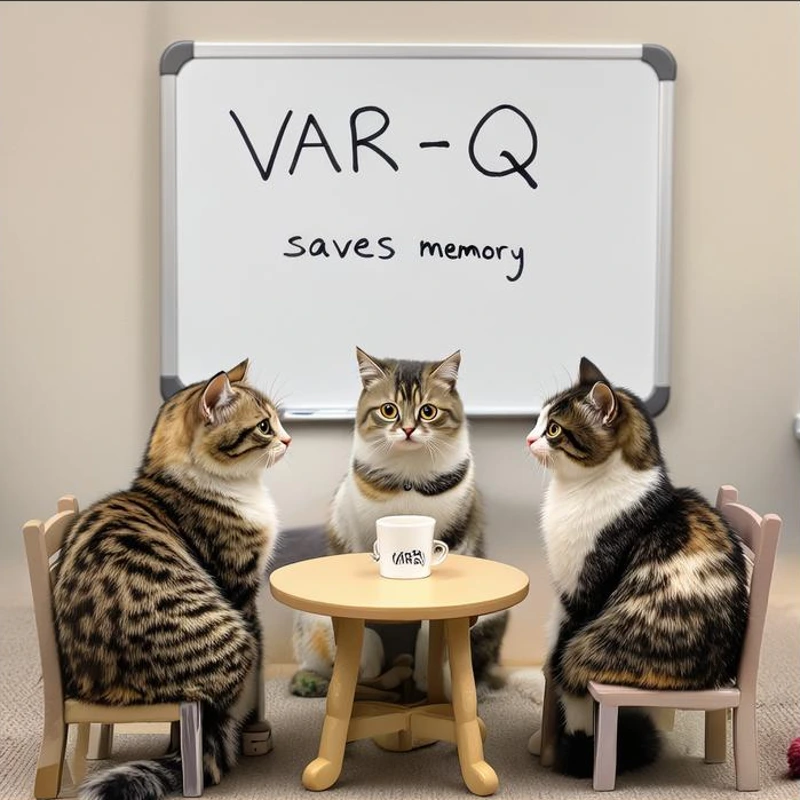
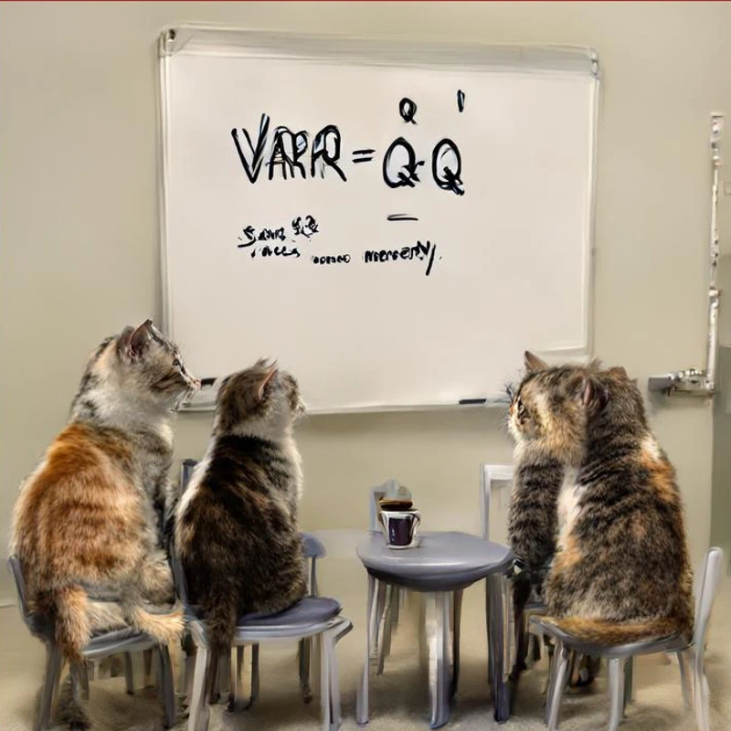
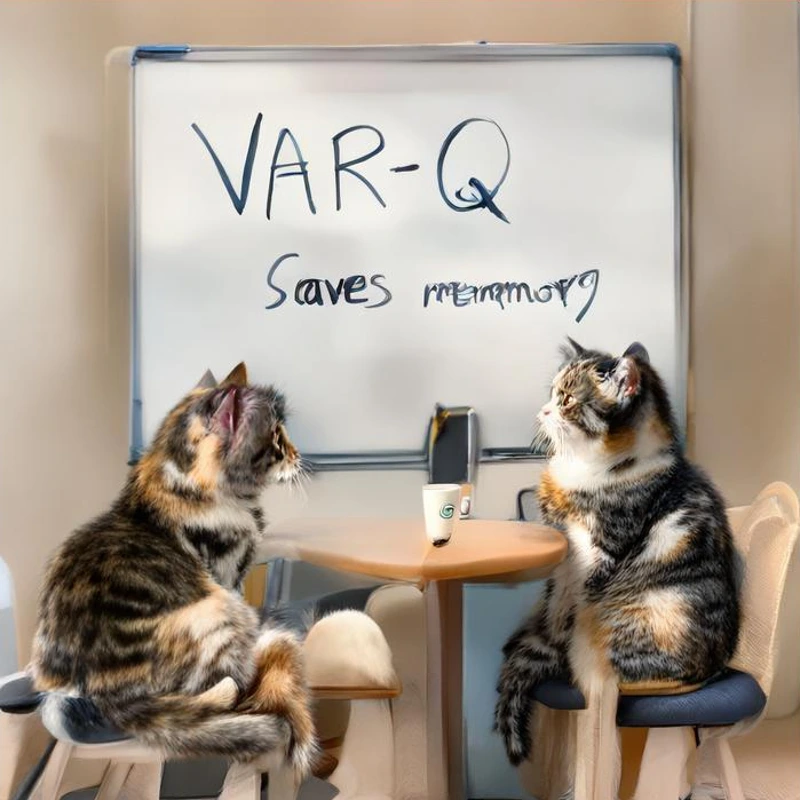
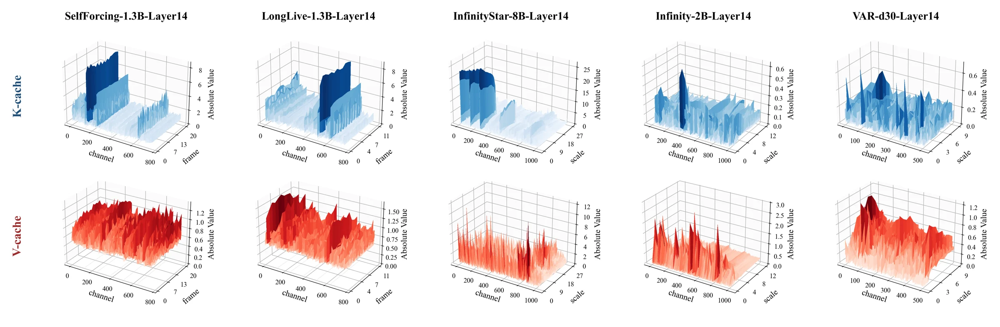
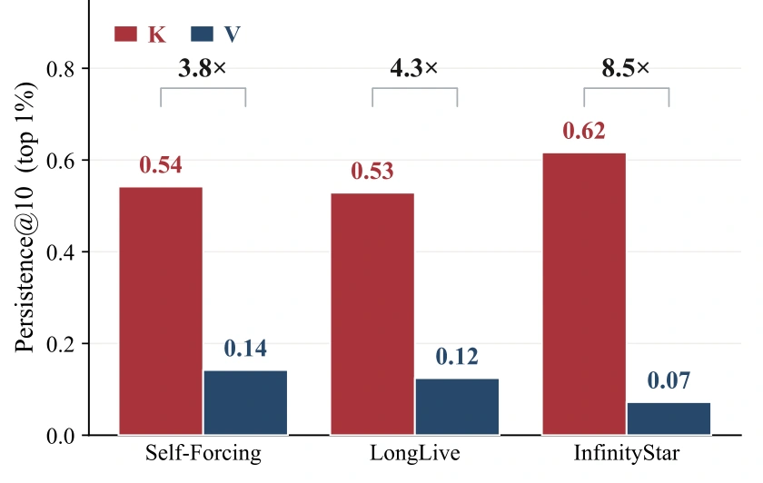
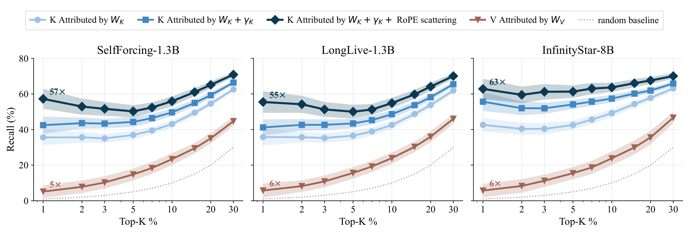
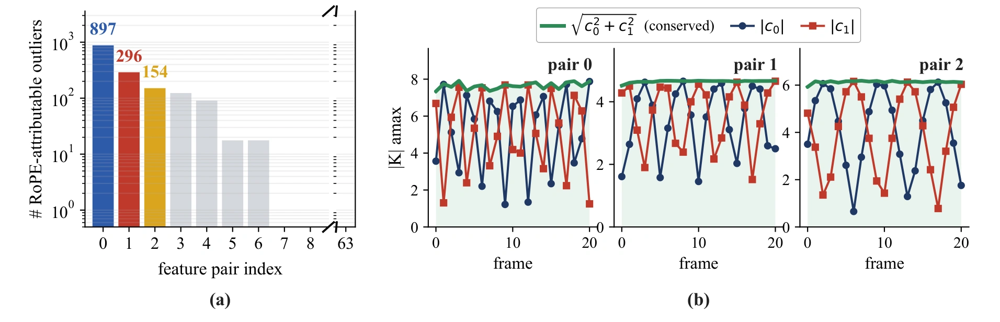

A few channels matter.
Masking just the top 0.5% of channels in LongLive collapses generation. Masking ten times as many inlier channels leaves quality largely intact.
Image & video generation / NeurIPS 2026
Low-bit visual memory.
No calibration. No retraining.
1 University of California, Santa Barbara2 University of Minnesota
† Equal contribution · NeurIPS 2026




less KV memory, up to*
larger inference batches, up to*
visual AR models evaluated
calibration or retraining steps
*Summary results reported in the paper. Gains depend on the model and precision; the batch-size result uses a single NVIDIA A100 80GB. See the configurations below.
The idea
As autoregressive models generate higher-resolution images and longer videos, their key–value caches can grow larger than the model weights. Quantization reduces this footprint, but grouping rules developed for language models can damage visual generation.
VAR-Q follows the structure of visual memory. It quantizes each feature channel within each generation block—a scale or a frame—using boundaries already provided by the generation loop. The same rule applies to both keys and values, across next-scale and next-frame generation.
01 / Generation quality
From image details to video trajectories,
compare low-bit caches with BF16.
Examine the whiteboard text and the position of the cats. Switch methods to compare each low-bit output against the same BF16 reference.
A selected example from Figure 1. Quantitative INT2 results and their quality tradeoffs are reported in Table 2 of the paper.
More image examplesAcross time

02 / The method
A channel × block view of the KV cache
explains where quantization groups belong.
Masking just the top 0.5% of channels in LongLive collapses generation. Masking ten times as many inlier channels leaves quality largely intact.
Large magnitudes persist along feature channels and shift across generation blocks. Grouping along only one axis misses part of the structure.
A scale or frame defines a block. VAR-Q reuses these boundaries, with no outlier detection, calibration data, or retraining.

Mechanistic attribution · Section 3.3
The two-axis pattern has a mechanism behind it. We trace the key cache through its projection chain, then separate persistent channel structure from position-dependent block dynamics.
01 / Architecture or input?
If outlier channels are tied to the architecture, they should recur across different prompts. Among the top 1% of channels, 53–62% of K outliers persist across all 10 prompts, compared with only 7–14% for V.
This supports a persistent architectural component in K. V outlier identity changes much more with the input. The remaining experiments trace this architectural component through the K projection chain.

02 / The channel axis
Projection weights seed the imbalance. Normalization gains can amplify it. RoPE redistributes it between paired channels. Each stage contributes to predicting which channels become outliers.
Heavy-tailed row norms in the key projection create an initial channel-magnitude imbalance.
Where post-projection RMSNorm is present, its learned channel gains amplify this imbalance.
Rotation scatters magnitude between paired channels while preserving each pair’s ℓ2 norm.
The evidence
At the top 1%, WK alone recovers 35–42% of final K outliers. Adding γK improves recall; including RoPE scattering brings the full chain to 55–63× random recall.
As a control, WV predicts V outliers at only 5–6× random recall. Weight structure explains much more of K’s outlier identity than V’s.

03 / The block axis
RoPE’s angle changes with position. For a paired set of K channels, this produces cosine and sine modulation: one channel can become large while its partner becomes small, even without a change in the underlying input amplitude.
The pair’s per-token ℓ2 norm is conserved. Individual channel magnitudes are not. Fast-rotating pairs produce stronger cross-block swings; slow pairs remain comparatively stable.

Persistent channel imbalance motivates per-channel grouping. Cross-block magnitude shifts motivate block-aligned boundaries. V has weaker architectural attribution, but shares the measured two-axis structure—so VAR-Q applies the same channel × block rule to both caches.
Explore the grouping
VAR-Q separates feature channels and generation blocks, so each group follows both axes of the cache.
Illustrative grouping diagram. Colors are schematic, not measured activations.
From algorithm to memory savings
VAR-Q quantizes the cache per channel and block, then packs low-bit values into INT32 storage. Before attention, cached values are unpacked and dequantized to BF16. Packing turns reduced precision into real KV-memory savings.
Read the algorithm
03 / The numbers
Reported quality and cache memory,
with the configuration kept in view.
Text-to-image · batch size 6 · Table 2
74.75% less KV cache memory
Cache memory at the same batch size. These figures are not total GPU memory or an inference speedup.
| Method | Precision | Quality ↑ | KV (GB) ↓ |
|---|---|---|---|
| Reference | BF16 | 85.72 | 67.43 |
| FlexGen | INT4 | 84.58 | 17.38 |
| KIVI | INT4 | 85.74 | 17.69 |
| VAR-Q | INT4 | 85.90 | 17.03 |
DPG measures prompt alignment. VAR-Q also scores 83.67 on GenEval, compared with 83.54 for BF16.
All values are reported in Tables 2–4 of the linked paper. Metrics differ across tasks and should be compared within a configuration. Read full results ↗
04 / Get started
The public repository provides the core quantization and packing utilities, plus VAR and Infinity examples. Start with the model-specific notebooks and follow the repository’s environment and checkpoint instructions.
Explore the repositorygit clone https://github.com/lujiaji/VAR-Q.git
cd VAR-QThe paper evaluates image and video models. The linked public quick-start currently documents VAR and Infinity image generation.
Reference
If VAR-Q is useful for your research,
please cite the paper.
@inproceedings{xu2026varq,
title = {VAR-Q: Tuning-free KV Cache Quantization
for Visual Autoregressive Image and Video Generation},
author = {Boxun Xu and Jiaji Lu and Yuxuan Yin and
Zihu Wang and Ziyue Liu and Yu Wang and
Zirui Liu and Peng Li},
year = {2026},
booktitle = {Advances in Neural Information Processing Systems},
url = {https://boxunxu.top/assets/pdf/VAR-Q.pdf}
}